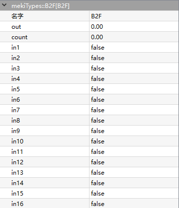
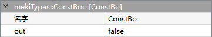
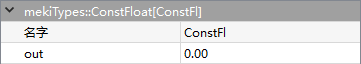
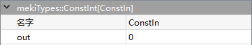
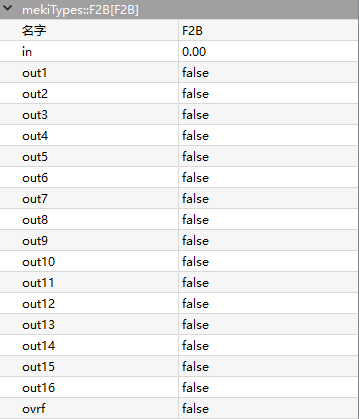

mekiTypes
- B2F
- 
B2F is a 16-bits binary to float encoder object.
Out = Encoded input values, as In16 is the MSB and In1 is the LSB
Count = Sum of the inputs that are active
- Parameters:
Out (real) – Encoded output value
Count (real) – Sum of the (read only)input that are active
In1-In16 (boolean) – Input value
{kind=link}
- ConstBool
- 
ConstBool is a Boolean object.
Out should never be a link destination
- Parameters:
Out (real) – Output value
{kind=link}
- ConstFloat
- 
ConstFloat is a real object.
Out should never be a link destination
- Parameters:
Out (real) – Output value
{kind=link}
- ConstInt
- 
ConstInt is an integer object.
Out should never be a link destination
- Parameters:
Out (integer) – Output value
{kind=link}
- F2B
- 
F2B is a float to 16-bits decoder object.
Out1 to Out16 are decoded as Out1 is LSB while Out16 is MSB
- Parameters:
In (real) – Input value
Out1-Out16 (boolean) – Output value
Ovrf (boolean) – Overflow flag when In is exceed the decoder range (0 – 65535)
{kind=link}
{kind=link}
{kind=link}